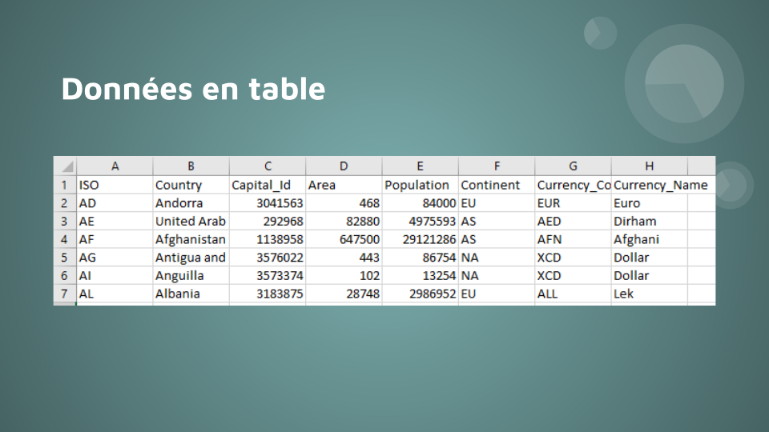
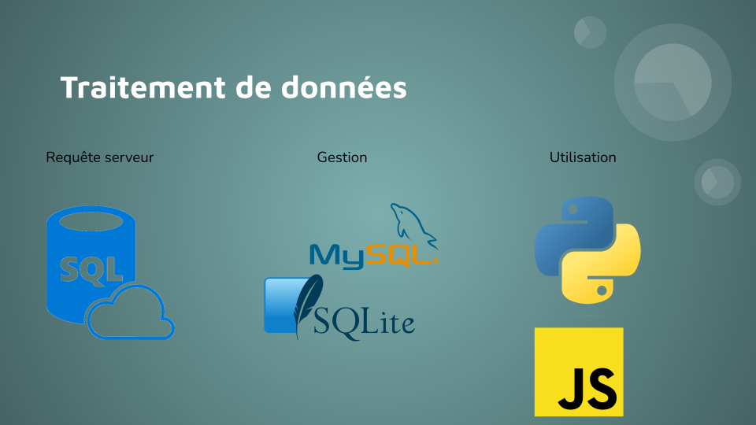

L'exposé porte est divisé en quatres parties :
- Définition d'une base de données
- Le traitement des données dans les bases
- L'usage de ces données
- Exemple d'utilisation



Pour finir l'exposé, nous avons étudier un exemple concret : celui de l'api SNCF.
L'iframe ci-dessous contient l'exemple intéractif montrant le fonctionnement d'une REST API comme celle de la SNCF.